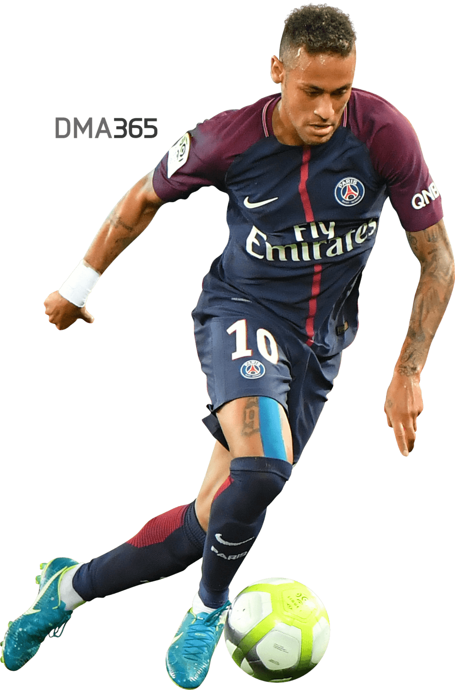

Neymar da Silva Santos Júnior (born 5 February 1992), known as Neymar, is a Brazilian professional footballer who plays as a forward for Ligue 1 club Paris Saint-Germain and the Brazil national team. He is widely regarded as one of the best players in the world.[7][8]
Neymar came into prominence at Santos, where he made his professional debut aged 17. He helped the club win two successive Campeonato Paulista championships, a Copa do Brasil, and the 2011 Copa Libertadores; the latter being Santos' first since 1963. Neymar was twice named the South American Footballer of the Year, in 2011 and 2012, and soon relocated to Europe to join Barcelona. As part of Barcelona's attacking trio with Lionel Messi and Luis Suárez, he won the continental treble of La Liga, the Copa del Rey, and the UEFA Champions League, and finished third for the FIFA Ballon d'Or in 2015 for his performances. He then attained a domestic double in the 2015–16 season. In 2017, Neymar transferred to Paris Saint-Germain in a move worth €222 million, making him the most expensive player ever.[note 1] In France, Neymar won three league titles, three Coupe de France, and two Coupe de la Ligue, which included a domestic treble and being voted Ligue 1 Player of the Year in his debut season.[11] Neymar helped PSG attain a domestic quadruple in the 2019–20 season, and led the club to its first ever Champions League Final.
With 64 goals in 103 matches for Brazil since debuting at age 18, Neymar is the second highest goalscorer for his national team, trailing only Pelé. He was a key player in Brazil's victories at the 2011 South American Youth Championship, where he finished as leading goalscorer, and the 2013 FIFA Confederations Cup, where he won the Golden Ball as player of the tournament. His participation in the 2014 FIFA World Cup and 2015 Copa América was cut short by injury and a suspension, respectively, before captaining Brazil to their first Olympic gold medal in men's football at the 2016 Summer Olympics. Two years later, having renounced the captaincy, he featured at the 2018 FIFA World Cup.
Off the pitch, Neymar ranks among the world's most prominent sportsmen; SportsPro named him the most marketable athlete in the world in 2012 and 2013, and ESPN cited him as the world's fourth-most famous athlete in 2016. In 2017, Neymar was included by Time in its list of the 100 most influential people in the world.[12] By 2018, France Football ranked Neymar the world's third highest-paid footballer. In 2019, Forbes ranked him the world's third highest-paid athlete,[13] and fourth highest-paid in 2020.[14]
